데일리벳 보도·광고 자료
원장을 위한 AI 실전 교육
시그니처 동물의료센터 이태호 대표원장이 수의사·동물병원 원장을 대상으로 여는 오프라인 교육입니다. 기사 예시, 보도자료 PDF, 사진, 배너를 한곳에 모았습니다. 기사 문구는 편하게 고쳐 쓰셔도 됩니다.
기사 예시
데일리벳 독자에 맞춰 쓴 예시입니다.
제목
코딩 모르는 동물병원 원장이 만든 프로그램 26개… 이태호 원장, 수의사 대상 AI 실전 교육 연다
부제
하루 집중 실습(기수당 5명)과 병원 방문 세팅 두 과정, 상상만 하던 우리 병원 프로그램을 원장이 직접 만든다
본문
시그니처 동물의료센터 이태호 대표원장이 수의사와 동물병원 원장을 대상으로 한 오프라인 교육 ‘원장을 위한 AI 실전 교육’을 연다. AI 사용법 일반론이 아니라, 동물병원에서 실제로 쓰는 프로그램을 수의사가 직접 만드는 방법을 다룬다.
이 원장은 코드를 직접 쓰지 않는다. 만들고 싶은 기능을 AI(Claude Code)에게 한국어로 설명하고, 결과를 보며 고쳐 달라고 하는 방식으로 진료·운영·경영·마케팅에 쓰는 프로그램 26개를 만들어 병원에서 매일 쓰고 있다.
보호자가 내원 전에 휴대폰으로 증상과 병력을 적어 보내는 사전문진, 진료 녹음을 SOAP 차트로 정리하고 보호자에게 보낼 진료 요약 문안을 붙이는 차트 프로그램, 심장초음파 리포트와 CT 판독 메모를 소견서로 정리하는 프로그램, 수술방·회복실·PC에서 함께 적는 마취·혈액투석 기록지가 대표적이다. 체중을 한 번 넣으면 수액·전해질 교정·수혈량 계산에 모두 반영되는 계산기 29종, 마약류 사용 기록과 NIMS 보고 대기함, 수혈 혈액 재고, 테크니션 근무표 자동 배정도 직접 만들었다. 매일 새벽에는 관심 분야 신규 논문을 PubMed에서 찾아 요약한 브리핑이 카카오톡으로 도착한다.
이 원장은 “저도 코드를 쓸 줄 모릅니다. 마취 기록지도, 근무표도 처음에는 ‘이런 게 있으면 좋겠다’는 생각 하나였습니다”라며 “같은 자리에서 시작했기 때문에 원장님들이 어디서 막히고 무엇부터 하면 되는지 압니다”라고 말했다.
교육은 두 과정으로 운영된다. ‘하루 집중 실습’은 시그니처 동물의료센터(서울 강남구 도산대로 213)에서 오전 10시부터 오후 6시까지 진행되며 정원은 기수당 5명이다. 참가자는 노트북을 가져와 오전에는 강사를 따라 세팅하고, 오후에는 사전 질문지로 미리 정한 ‘우리 병원 프로그램’을 직접 만든다. 교육을 마치면 만든 프로그램이 휴대폰 홈 화면에 설치되어 있고, 병원 이름·진료과·문체·금지 사항을 담은 병원 규칙 파일과 매일 정해진 시간에 저절로 도는 자동화 작업 1개를 가져간다. 수강료는 1인 110만 원(부가세 포함)이다.
‘병원 방문 세팅’은 이 원장이 병원을 직접 찾아가 하루(최대 8시간) 동안 병원 계정으로 AI 도구와 배포, 저장소, 자동화까지 연결해 두는 과정이다. 프로그램 몇 개를 만들어 주고 끝나는 것이 아니라 병원이 앞으로 원하는 프로그램을 직접 만들어 쓸 수 있는 환경을 갖춰 주는 것이 핵심이다. 그 병원 수의사와 직원은 인원 제한 없이 참석할 수 있고, 직원 사용법 안내 60분이 포함된다. 비용은 병원 1곳당 550만 원(부가세 포함)이며 서울·경기는 출장비가 포함된다.
두 과정 모두 선착순이다. 이 원장이 진료를 계속하는 만큼 하루 집중 실습은 한 달에 한 번, 병원 방문 세팅은 한 달에 한 병원만 진행한다. 교육에서 쓰는 Claude Code는 무료 요금제에서는 쓸 수 없어 Claude 유료 구독이 별도로 필요하다.
이 원장은 “AI가 수의사를 대체하지는 않겠지만, AI를 쓰는 수의사가 쓰지 않는 수의사의 자리를 가져갈 것이라고 생각한다”며 “관심은 있었지만 어려워서 시작하지 못한 원장님들이 하루 만에 우리 병원 첫 프로그램을 손에 쥐고 돌아가시도록 돕겠다”고 밝혔다.
이 원장은 건국대학교 수의과대학 임상내과학 겸임교수, 대한수의사회 학술홍보위원회 위원장, 한국동물병원협회 정책기획위원회 위원장을 맡고 있으며 국제 소동물 내과 인증의(ISVPS GPCert)다. 2022년부터 2025년까지 혈액투석 아카데미를 운영하며 수의과대학 4곳과 동물병원 8곳을 대상으로 교육했다.
교육 안내와 신청은 leetaeho.co.kr/ai-class 에서 할 수 있다.
사진 설명
이태호 시그니처 동물의료센터 대표원장
사진
인물 사진은 기사용, 누끼 사진은 배너·편집용입니다.


배너
일반적으로 많이 쓰는 규격으로 만들었습니다. @2x는 고해상도 화면용입니다. 매체 규격을 알려 주시면 맞춰 다시 만들어 드립니다.
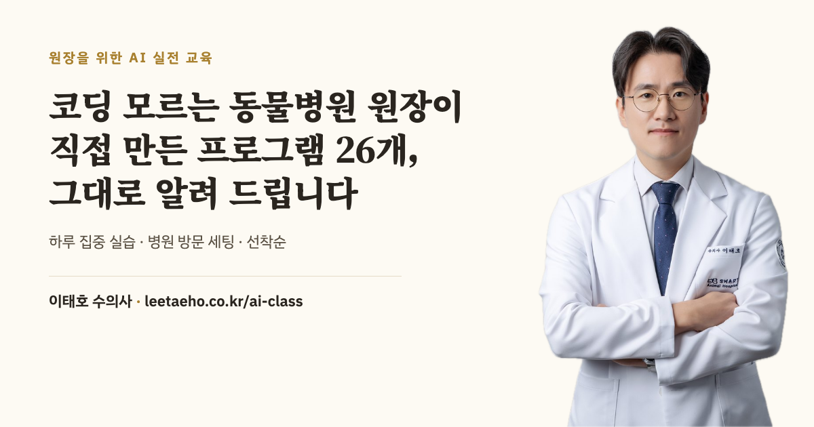

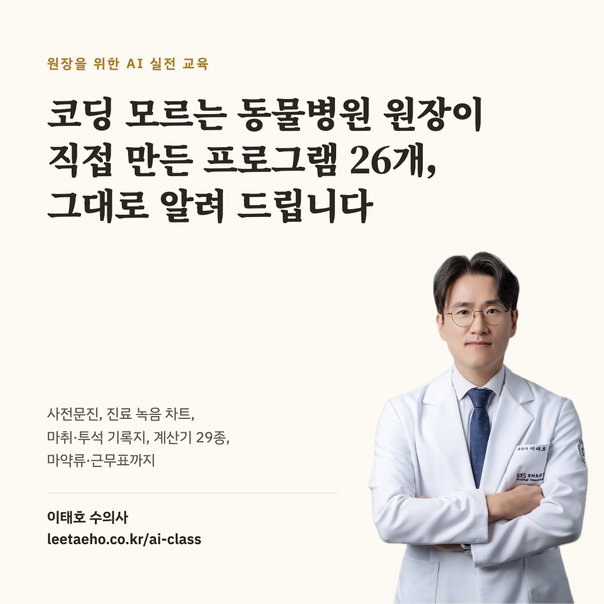

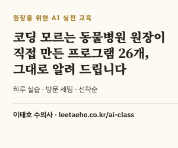

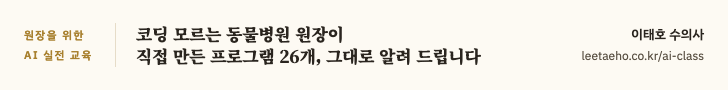


프로그램 화면
이 원장이 직접 만들어 쓰는 프로그램의 예시 화면입니다. 화면 속 환자·직원·병원 이름과 수치는 모두 가상 데이터입니다.
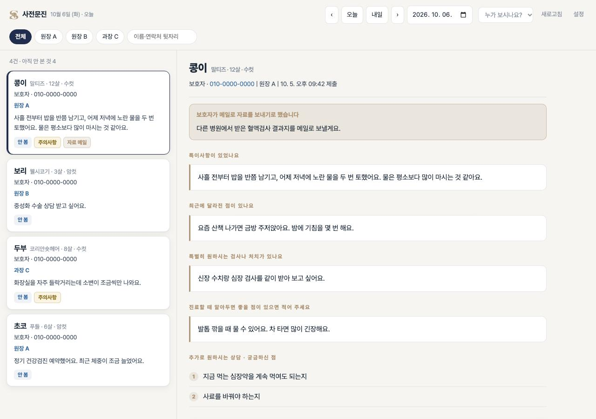

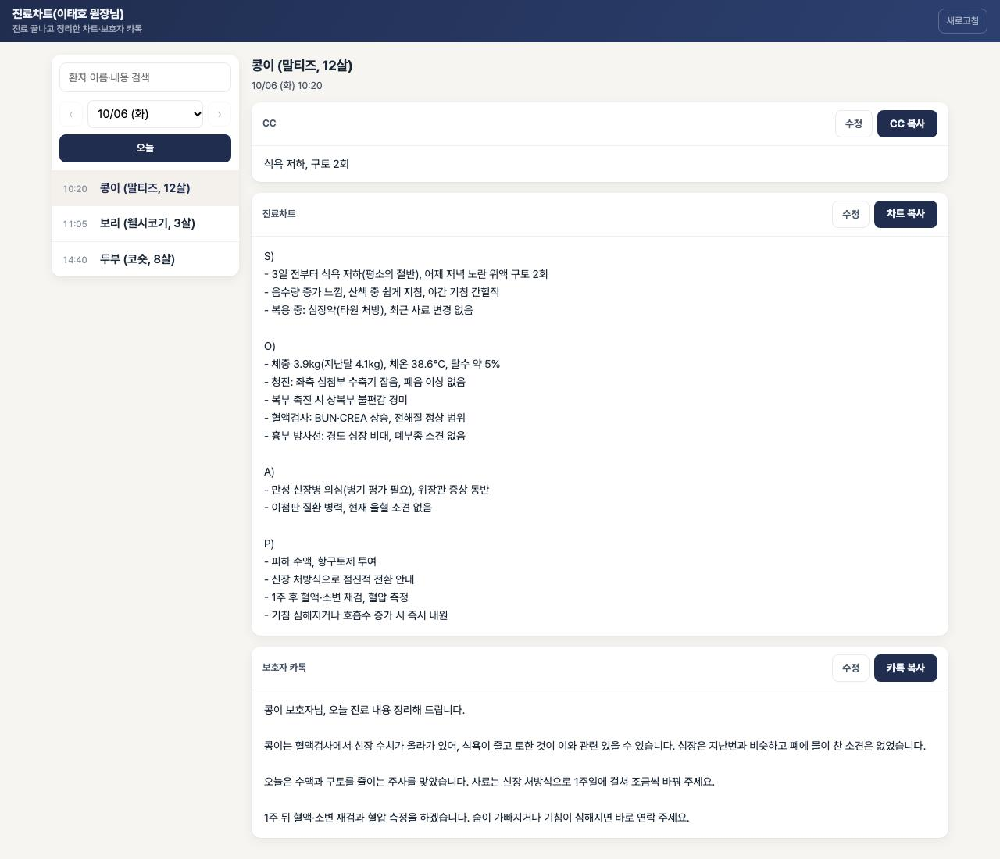

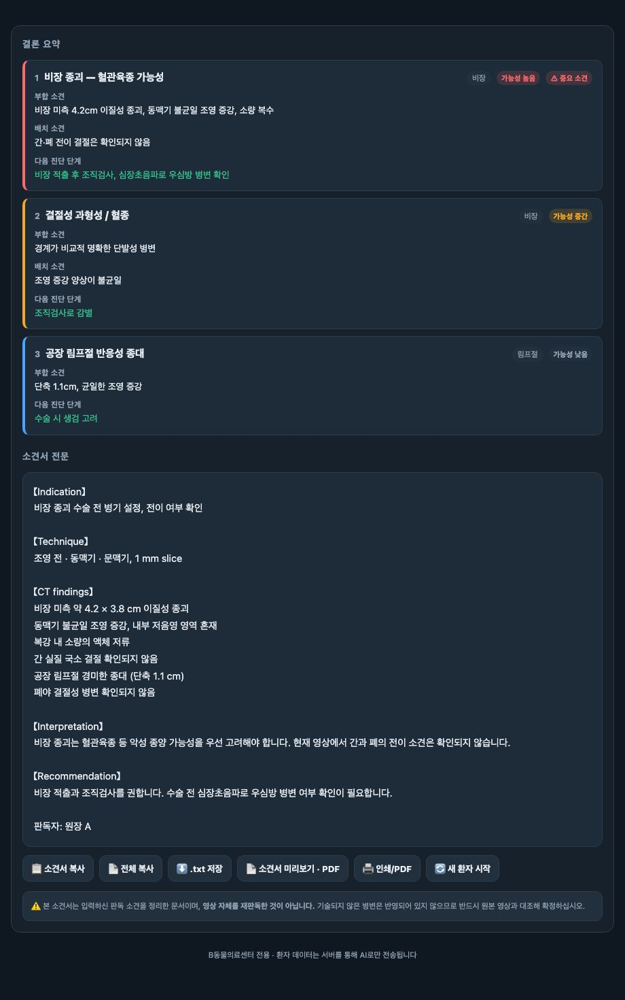

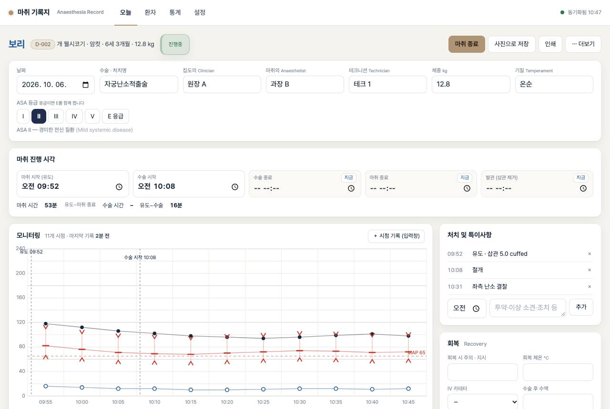

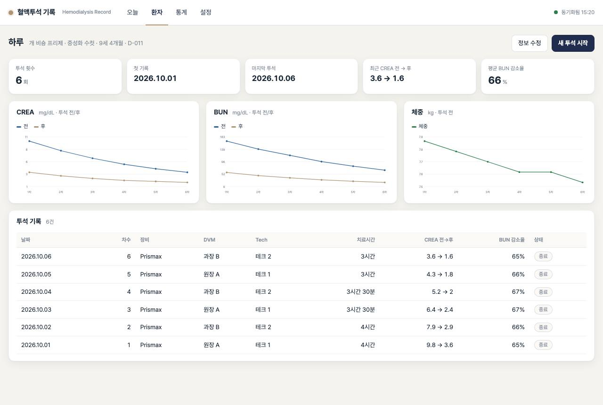

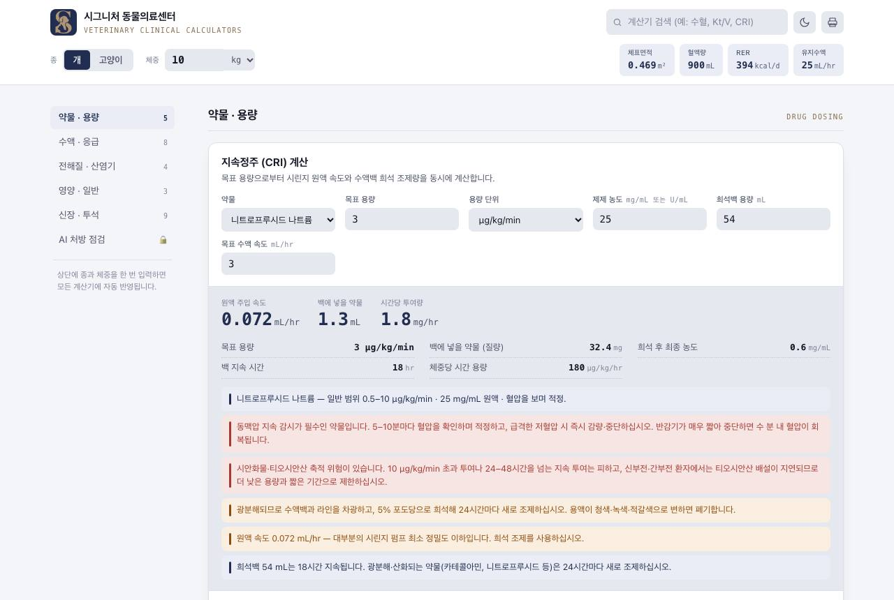

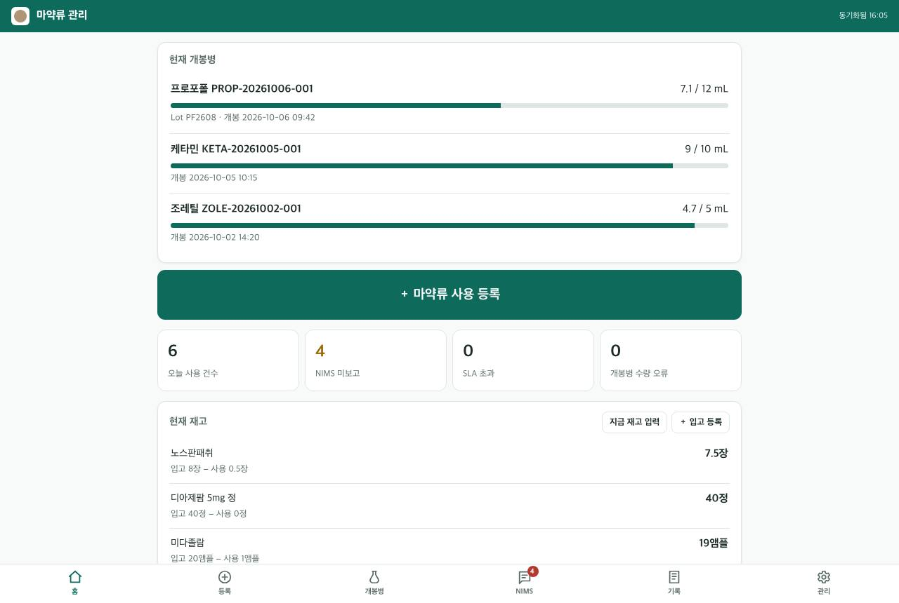

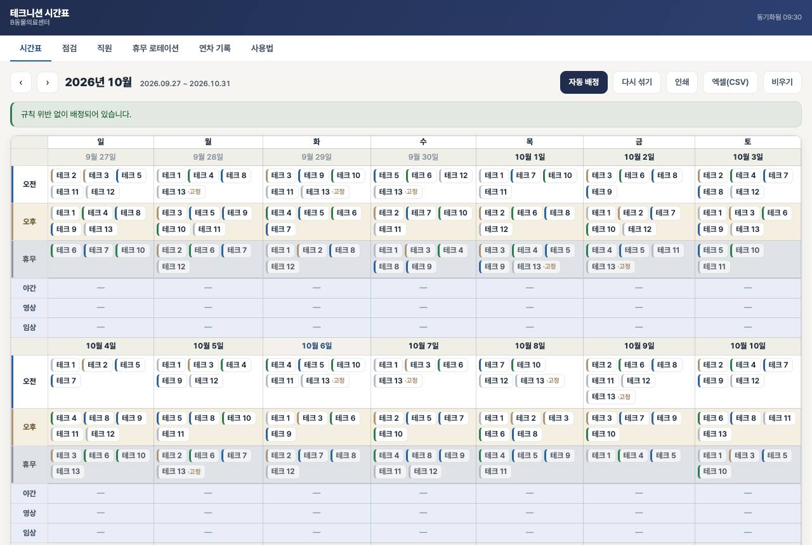

교육 안내문 (전체)
모집 페이지 내용을 한 장으로 정리한 안내문입니다. PDF 속 버튼은 눌립니다.
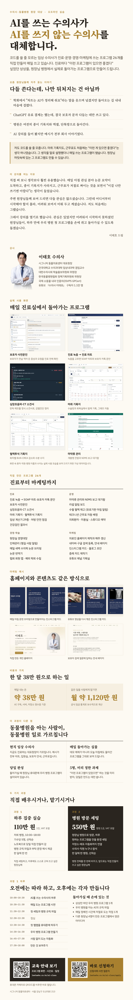

교육 개요
| 교육명 | 원장을 위한 AI 실전 교육 |
|---|---|
| 강사 | 이태호 · 시그니처 동물의료센터 대표원장, 건국대학교 수의과대학 임상내과학 겸임교수, 대한수의사회 학술홍보위원회 위원장, 한국동물병원협회 정책기획위원회 위원장, 국제 소동물 내과 인증의(ISVPS GPCert) |
| 과정 1 | 하루 집중 실습 · 시그니처 동물의료센터(서울 강남구 도산대로 213), 10:00–18:00, 기수당 5명, 1인 110만 원(부가세 포함), 한 달에 한 번 |
| 과정 2 | 병원 방문 세팅 · 원장님 병원에서 하루(최대 8시간), 병원 1곳 550만 원(부가세 포함, 서울·경기 출장비 포함), 수의사·직원 인원 제한 없음, 한 달에 한 병원 |
| 모집 | 두 과정 모두 선착순 · Claude 유료 구독 별도 |
| 안내·신청 | leetaeho.co.kr/ai-class |
| 문의 | growingtiger+aiclass@gmail.com |